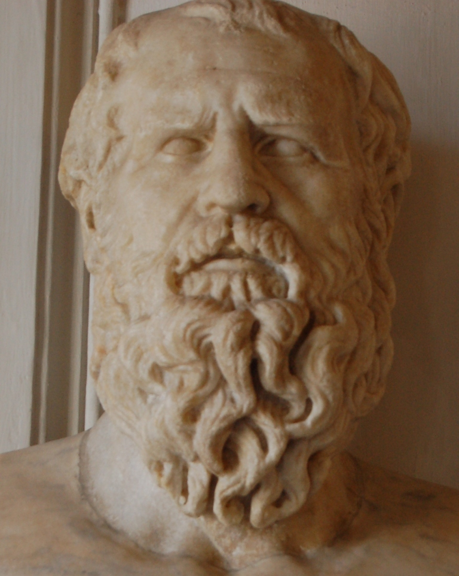
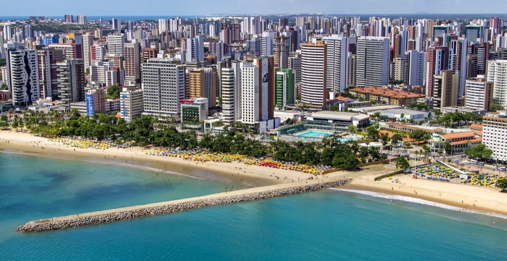
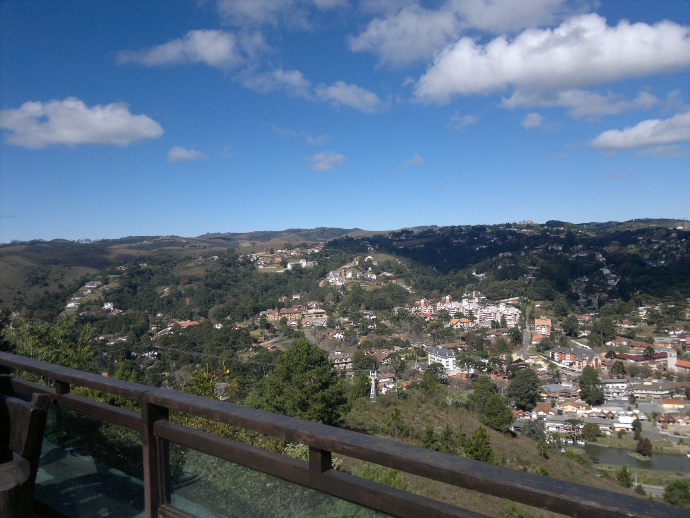
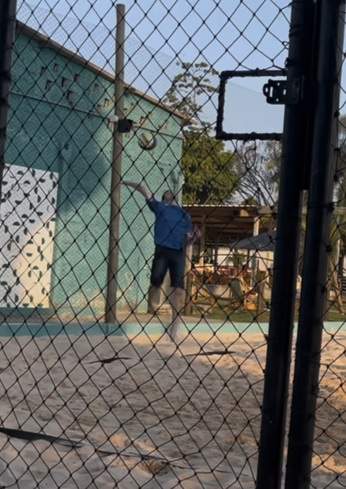
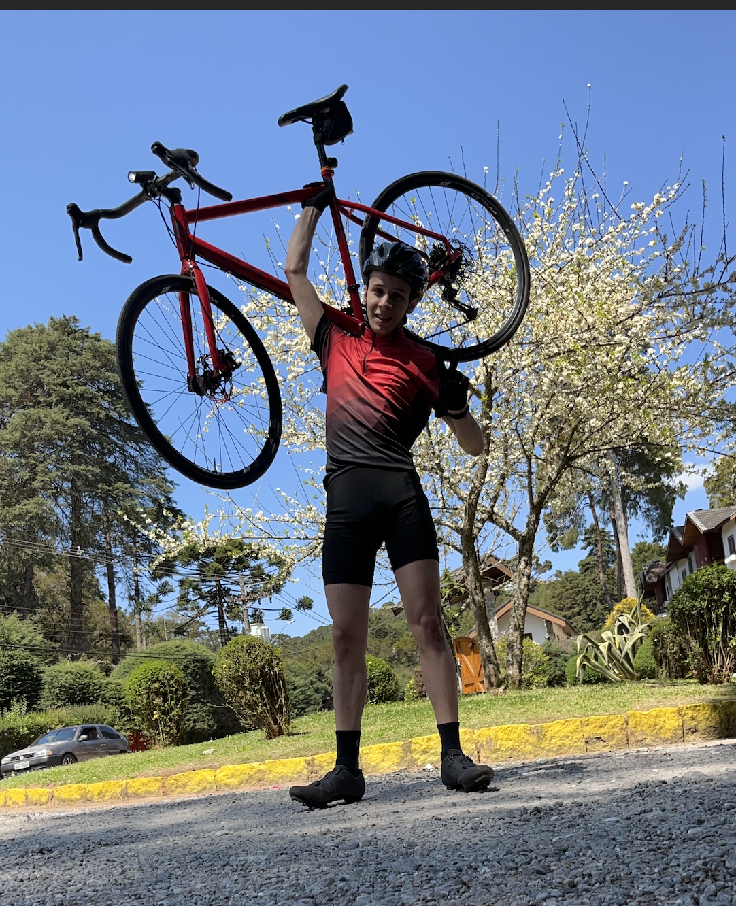
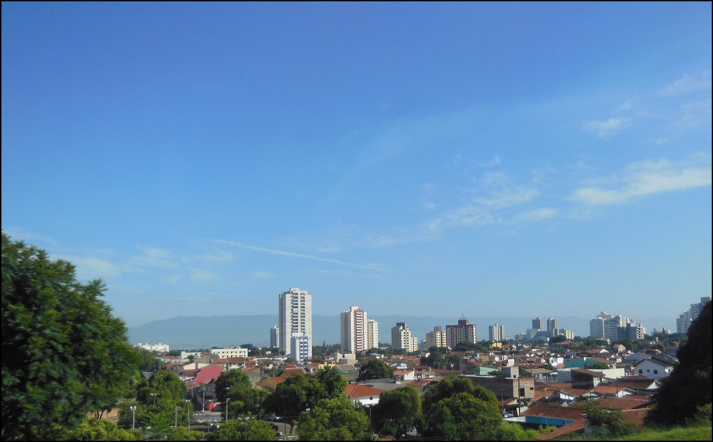
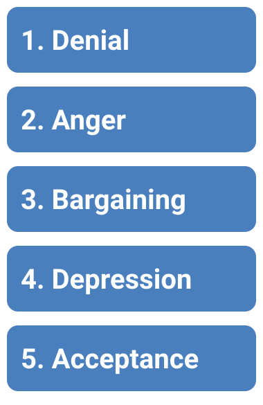
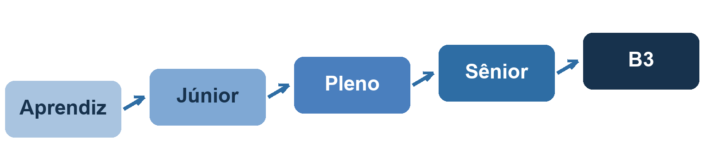
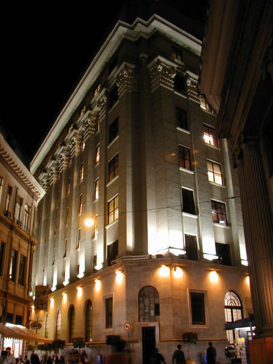

A story about leaving home, losing my bike, and learning
to choose change.
♪ Sympathy for the Devil, The Rolling Stones
(1968) · "Please allow me to introduce myself."
Opening thought
The only constant in life is change.
attributed to Heraclitus

Heraclitus. Source: Wikimedia Commons.
Part 1 · Talk about myself
From Fortaleza to
Campos do Jordão
I was born in Fortaleza, Ceará, and lived there until I
was 13 or 14. When my parents' jobs changed, my whole
family moved to a small, cold mountain town in São Paulo
— the highest city in Brazil.

Fortaleza, Ceará, my first home. Source:
Wikimedia Commons.

Campos do Jordão, SP, where I grew up. Source:
Wikimedia Commons.
Part 1 · My teenage years
Volleyball, my bike,
and one accident

I used to play volleyball for my school team.
Source: Wikimedia Commons.

Riding my bike in the mountains.
At 21, a bike accident, two days before my birthday. The
doctors told me I must stop riding.
Part 1 · Today and my plans
Where I am now

Taubaté, SP — a medium-sized city in the Paraíba
Valley. Source: Wikimedia Commons.
■ Senior
Developer at B3, the Brazilian
stock exchange
■ I go to São
Paulo almost every week, with long commutes
(hybrid routine)
■ Studying
English & building better habits
Goal · pay off my houseGoal · better EnglishGoal · start a postgraduate
Part 2 · Define a successful change
Change is emotional before
it is practical
01
Fear
The future is unknown, and we feel we are losing
control.
02
Anxiety
We want quick results and we want certainty now.
03
Insecurity
We are afraid of failing in front of others.
04
What I feel: doubt
"Am I making the right decision?" even when I
already know the answer.
Part 2 · Emotions matter
Emotions are data
If you feel something bad about
a change, it probably means it is not something
you really want.
If you feel something good, it
is the opposite.
So emotions should not be ignored, they
must be understood. A change
that goes against our emotions usually
cannot last long.

The Kübler-Ross curve of emotions. Source:
Wikimedia Commons.
Part 2 · My definition
What is a successful change?
1
It was concluded
What was proposed actually happened.
2
I adapted well
The new situation became natural.
3
The metrics held
They showed that I did not regress.
4
It is marked done
I can close the chapter with confidence.
Also: change only happens when it is
imposed on you or when you
want to reach a new place, because we
always look for the easiest path. But if we never
change, we never grow.
Part 3 · A drastic change
My biggest change was
professional
2018 – 2019
Apprentice at Minalba
Small routine, simple job, while I was studying
IT at IFSP and already loved programming.
2021
Developer at PontoTel
I was growing step by step, Junior II → Junior
IV → mid-level. But comfort became the problem.
2025
Senior Developer at BRQ
I left a stable job for a bigger challenge.
Focus: better opportunities and bigger
companies.
Today · Hybrid
Senior Developer at B3
Work that can impact, and even cause the loss
of, millions of reais or dollars.

During the transition I was feeling two things at once:
apprehension and motivation. There is
always insecurity when you start something new, but I
could not stay still.
Part 4 · Conclusion
So, how do I react to changes?
Positively, although with doubts and insecurity
at the beginning.
I am adapting to B3, improving my English and
building better habits. In the future I will pay
off my house, start a postgraduate and reach a
higher level of English. I might even look for
an international opportunity, but I must prepare
first.

B3, the Brazilian stock exchange. Source:
Wikimedia Commons.
Closing
All changes, even the most longed for, have their
melancholy; for what we leave behind us is a part of
ourselves.